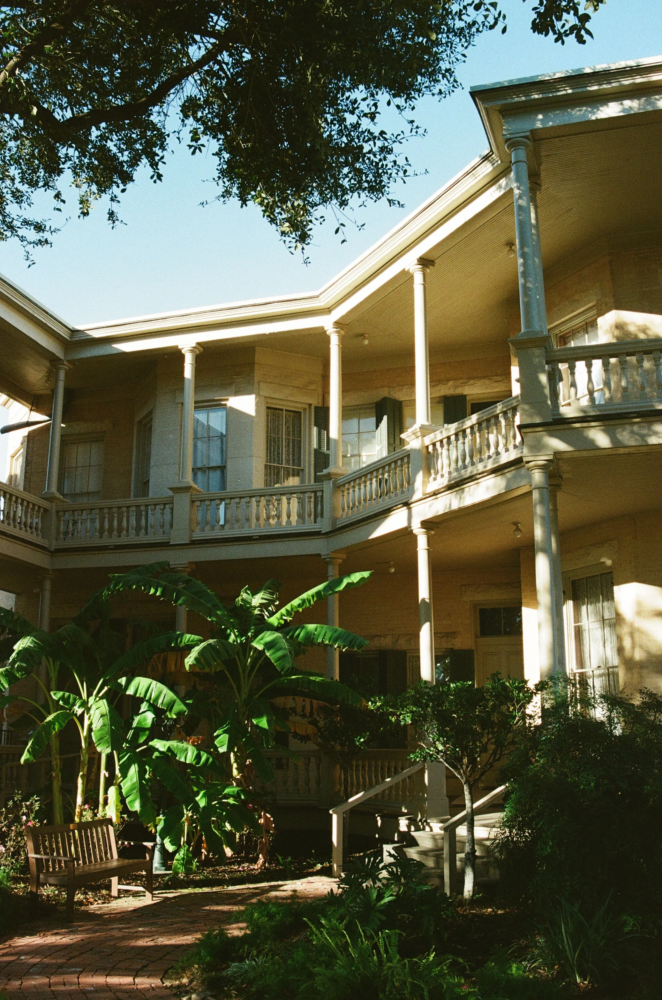

Work is not a résumé line.
It is a burden chosen.
"The meaning of life is to find your gift.
The purpose of life is to give it away."
— Pablo Picasso
Experience is what I chose to carry when it mattered.
USDA_ARS: I build early-warning systems because
time is mercy.
OPENAI: I help people meet the future, turning noise into
clarity.
TEACHING: I taught OS. Understaning the machine is
protection.
"To predict is to prepare. To prepare is to care."
Forecast / Guide

Historic homes survive
because
someone stays.
def serve():
warn()
teach()
return integrity
"The only way to deal with an unfree world
is to become so absolutely free
that your very existence is an act of rebellion."
— Albert Camus
EVIDENCE_LOCKER
- The Identity <- Who I am
- The Research <- My Purpose
- The Projects <- My Ideas
- The Work <- My Duty
- The Labor <- Resume/CV